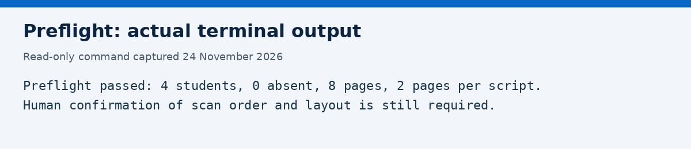

Your first teacher-reviewed AI marking run on Azure
Part 1 of 8 · For teachers · Evidence captured on 24 November 2026

Marking software is useful only when you can see what it has done. In this series, we follow an existing handwritten exam through preparation, proposed marks, teacher review and reports. Every demonstrated stage includes an actual saved output or a fresh read-only check. We do not substitute a polished diagram for evidence that the application ran.
The application is Azure Handwriting Grader Skills. It uses Azure OpenAI for selected image and language tasks, with Microsoft Agent Framework coordinating the default grading workflow. Local Python code handles many other operations. AI does not approve scores or authorize email.
Our example is four students, eight scanned pages, five questions and 50 possible marks. Each student has two pages. It is an existing VTC-themed assessment, not the previously proposed six-student demonstration. The owner has confirmed that these example details may be retained for publication.
What you will have at the end
You will understand how to check the exam structure, inspect the rubric and answer boxes, and recognize when to stop before spending money. The supplied saved reports demonstrate later stages; they do not prove that the current inputs pass every check today.
An IT colleague should first install the repository's locked dependencies and configure appropriate Azure deployments and authentication. Teachers should not need to paste credentials into an assistant conversation.
Step 1: Look at the actual scanned exam
Suggested teacher prompt
Use the existing example exam. Show me the first two scanned pages,
the number of scripts and the marking scheme.
Do not call Azure, approve anything or send email.

Figure 1. Actual page 1 rendered from example/VTC Test.pdf, not a generated illustration.
The page image is the starting evidence. Check that the entire answer area is visible, the handwriting is readable, and the page belongs to the expected layout. Do not judge crop quality from a small thumbnail; enlarge the original image.
Output to inspect: the scanned page. Decision: can the exam be read and divided into the intended two-page scripts? A filename alone cannot answer that question.
Step 2: Run preflight—and understand what it proves
The following command was run read-only against the existing example:
handwriting-grader preflight --exam example/example.yaml
Observed output
Preflight passed: 4 students, 0 absent, 8 pages, 2 pages per script.
Human confirmation of scan order and layout is still required.

Figure 2. A rendered copy of real terminal output, not a product-interface screenshot.
Preflight establishes basic structural consistency. Four expected students and eight pages fit a two-page-per-script configuration. It does not establish that each page is upright, correctly ordered or correctly associated with a student.
This distinction matters: a green structural check is not permission to stop looking.
Step 3: Run the scan check—and stop at this example's blocker
handwriting-grader check-scans --exam example/example.yaml
Observed output, shortened
Scan orientation/sequence issues found (3):
- PDF page 1 (Script #1, page 1): out of sequence
- PDF page 3 (Script #2, page 1): out of sequence
- PDF page 5 (Script #3, page 1): out of sequence
The full captured message says those pages match template page 2 instead of page 1 and asks for manual correction followed by another check. The command returned a nonzero exit status.

Figure 3. Actual blocker captured while preparing this series.
Do not continue to paid grading from this state. Compare the flagged pages with the configured layout. A detector can be wrong, so this is not proof that the paper pages are definitely shuffled. It is evidence that the current run is blocked and needs investigation. Do not silence the check or change approved inputs merely to obtain a successful screenshot.
The later articles inspect historical outputs that already exist. We did not rerun paid grading or claim to resolve this blocker during article preparation.
Step 4: Inspect the saved rubric
The existing rubric workbook contains five questions worth ten marks each. Q1 asks students to expand VPET and explain its importance. Its item-specific allocation is 2 marks for the expansion, 4 for practical or specialized skills, and 4 for the workforce benefit.

Figure 4. A table rendered from actual workbook cells; this is not an Excel screenshot.
For a fresh run, the local spreadsheet import path is:
handwriting-grader import-rubric --exam /private/exam.yaml
This command is a procedure example, not an execution transcript for this saved output. The project also supports paid extraction from DOCX. Do not infer the original creation route from the presence of a workbook.
Inspect the question wording, partial-credit rules and maximum marks. Approve only after resolving ambiguities:
handwriting-grader approve-rubric --exam /private/exam.yaml \
--confirm-reviewed
The flag records an explicit human action; it is not something the assistant should add on your behalf.
Step 5: Inspect answer boxes before sending images
Fresh preparation and local review use:
handwriting-grader prepare-regions --exam /private/exam.yaml
handwriting-grader review-regions --exam /private/exam.yaml

Figure 5. An offline visualization of saved annotations on the saved template—not a capture of the browser editor.
Look for handwriting touching boundaries, labels associated with the wrong area, and identification fields that include printed headings. Part 4 shows why these checks are essential.
Before the first paid request
Once blockers are resolved and the required input reviews are current, preview grading with your private priced configuration:
handwriting-grader grade --exam /private/exam.yaml \
--model-config /private/priced-config.yaml \
--endpoint https://YOUR-RESOURCE.openai.azure.com --api-version v1
This placeholder command has not been run as part of this article. Paid execution additionally requires explicit consent and --confirm-cost. The application verifies required prices before the paid request; a failed check must block rather than guess.
The useful result of this first walkthrough is not “AI marked everything.” It is a visible exam, a verified structural summary, a real scan blocker and reviewable rubric/crop evidence. Knowing when not to run AI is part of a successful workflow.
Next: review the existing proposed marks and reports.
Implementation reference: installation and reviewed workflow at the inspected revision.